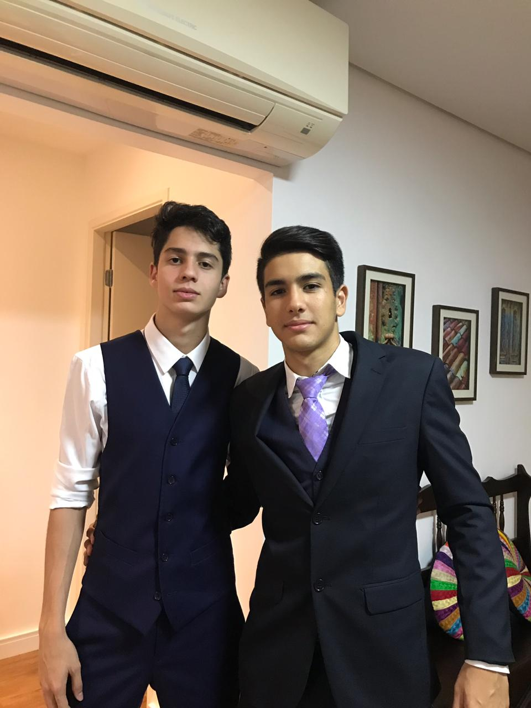

Dentre todos os medos que eu tenho na vida sem dúvida nenhuma morrer é o maior de todos,porque pra mim a vida é a coisa mais sagrada e valiosa de todas
Curriculum Vitae
José Pedro Silva Santiago |
 |
|
|
Por que tenho esse medo? Dentre todos os medos que eu tenho na vida sem dúvida nenhuma morrer é o maior de todos,porque pra mim a vida é a coisa mais sagrada e valiosa de todas |
O dia que tive mais sorte foi o dia que eu nasci,pois eu tive a sorte de estar em uma ótima família nascer em um bom país/cidade e em ótimas conddições

|
Sim, porém não tenho porque minha mãe odeia e já que ela é a dona da casa n tenho como discutir, mas gostaria de ter um cachorro |

|
Meu time de coração é o Clube de Regatas do Flamengo, confesso que foi por livre e espontânea pressão,e apesar de não ser um torcedor fanático , gosto muito de passar raiva assistindo aos jogos. |

|
Se eu fosse um herói eu seria Pantera Negra, não sei explicar o motivo mas eu acho ele muita onda |
Eu escolhi o curso de informática pois eu acredito que essa área tem um grande potencial furturamente ao contrário das demais(mecatrônica e eletrônica), e uma área que gera bastante emprego